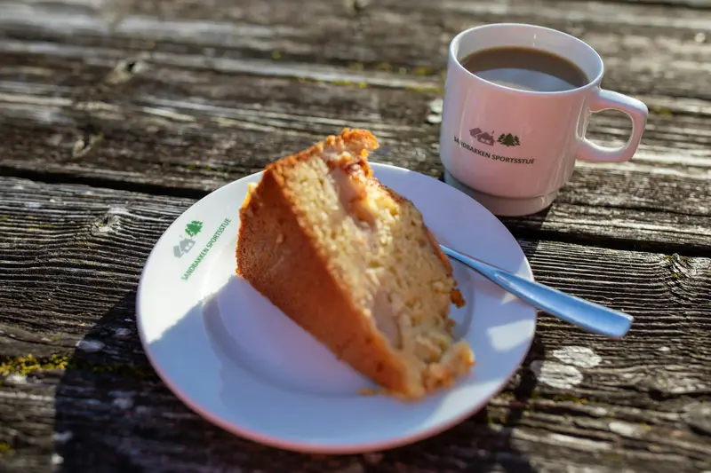
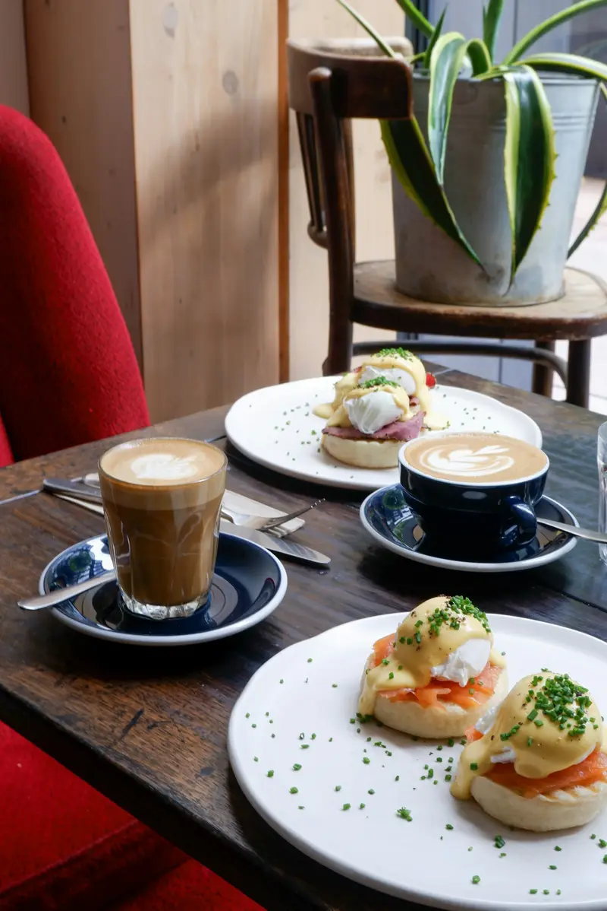
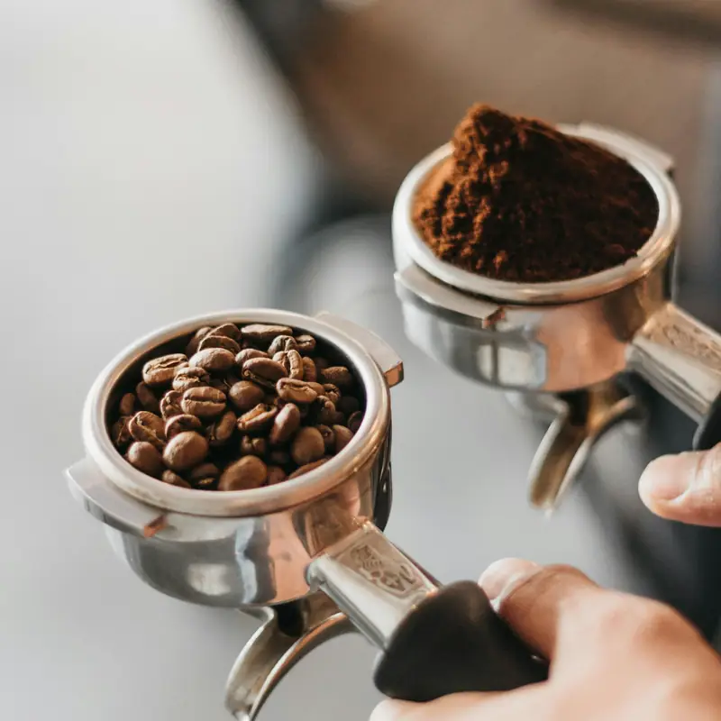

La carte
Boissons végétales (avoine, amande) sans supplément. Toutes nos pâtisseries existent aussi à emporter.
Cafés
Thés et boissons
Pâtisseries
Brunch du dimanche
Brunch le dimanche de 10 h à 14 h, sur réservation. Liste des allergènes disponible au comptoir.


